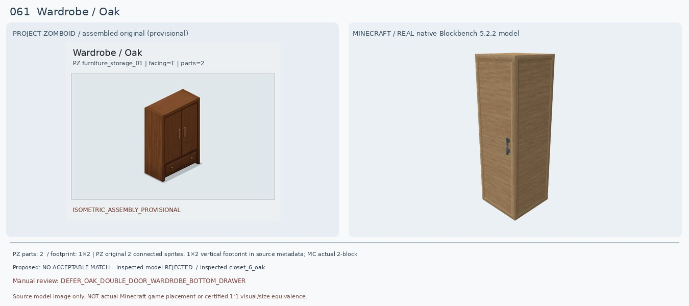
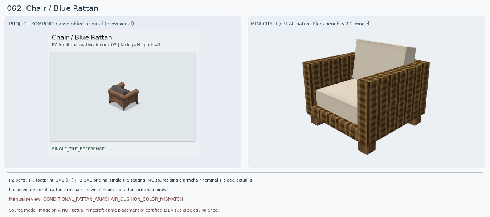
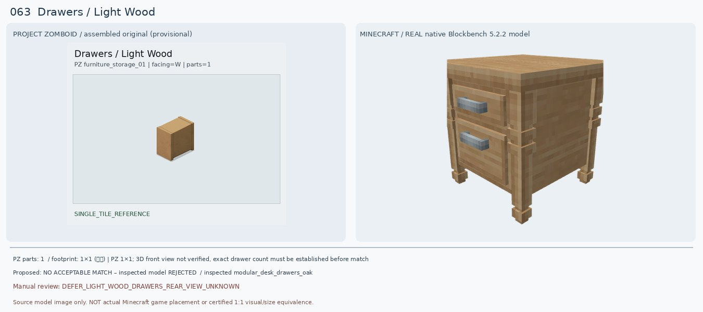
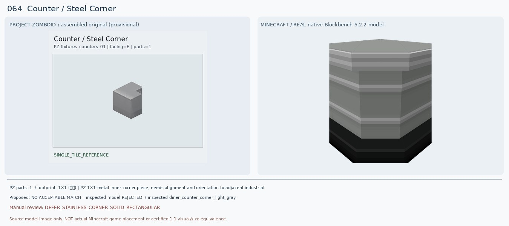
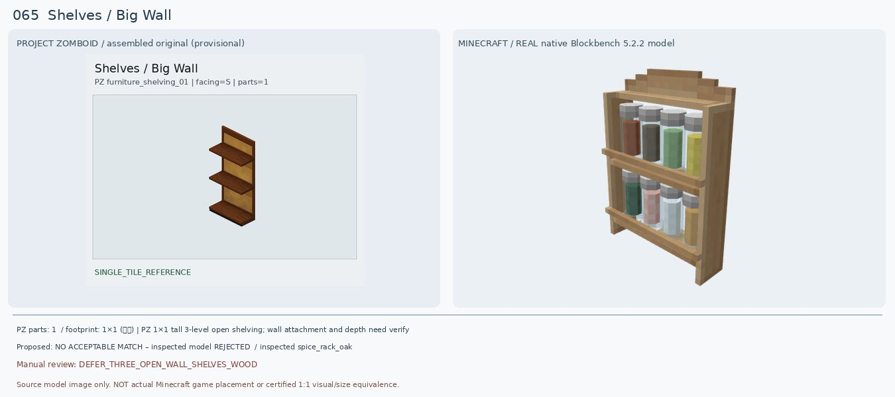
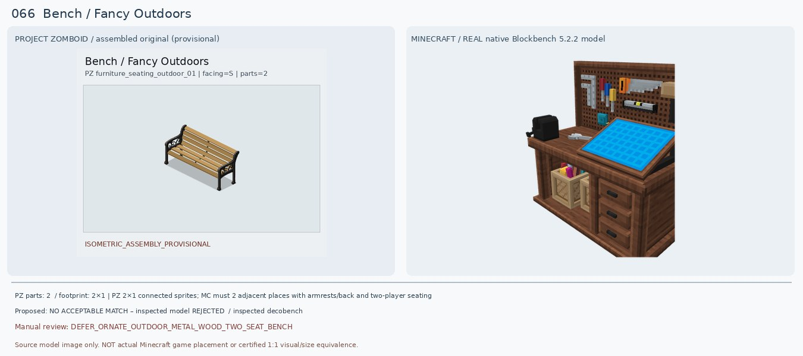
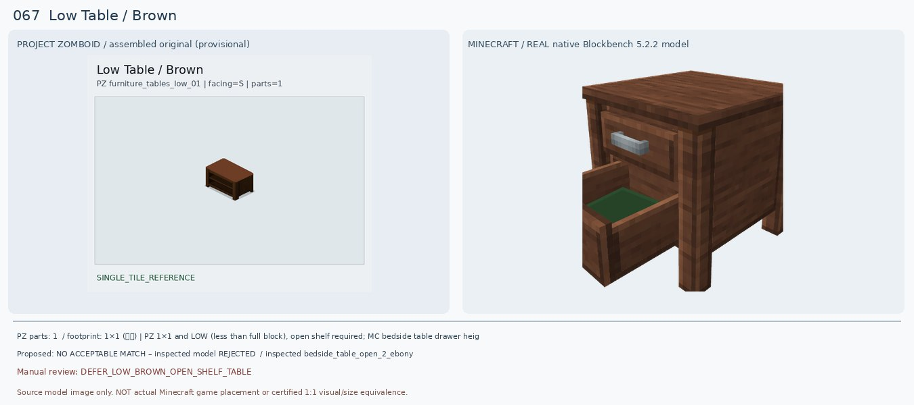
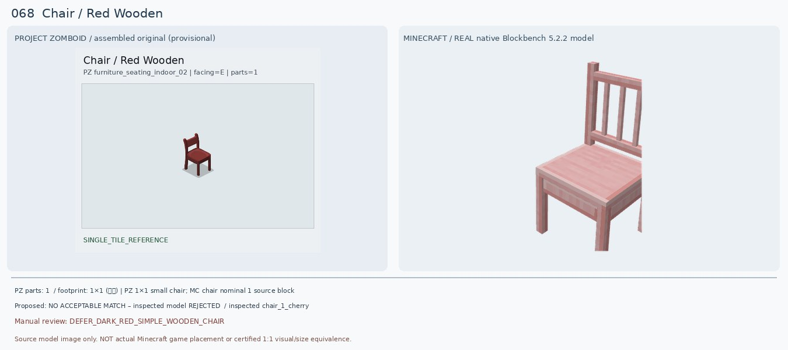
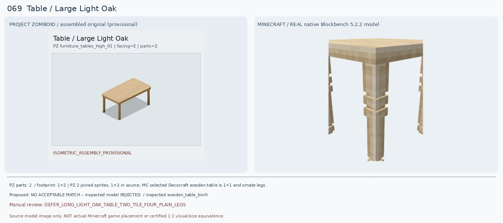
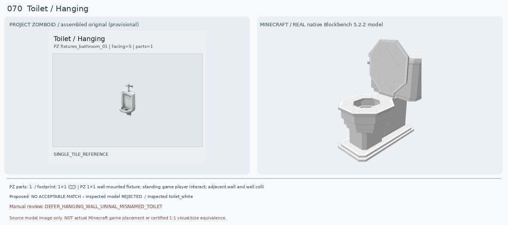

Wardrobe / Oak
검수: DEFER_OAK_DOUBLE_DOOR_WARDROBE_BOTTOM_DRAWER
실제 선정 후보: 없음 — 후속 검토
실제로 렌더해 비교한 모델: decocraft:closet_6_oak
다른 후보: mcwfurnitures:oak_double_wardrobe; Furnection wardrobe Forge 1.20.1 (both require direct re-render)
크기: PZ original 2 connected sprites, 1×2 vertical footprint in source metadata; MC actual 2-block size not verified
원본 외형: Tall dark warm oak two-door wardrobe, TWO centered vertical metal handles and full-width single shallow bottom drawer with two knobs, complete 2-sprite 1×2 composition
판정 이유: PZ 전체는 짙은 오크색 양문형 옷장+하단 긴 한 칸 서랍, 가로폭 2칸으로 완성된다. Decocraft Closet 6 Oak는 밝은 오크 단문형으로 바닥 서랍과 두 손잡이가 없고, Closet 3 Oak는 3단 서랍장, Closet 5 Oak는 열린 의류칸이므로 모두 다른 물건이다. 기존 Macaw oak_double_wardrobe의 소스 렌더도 실제 문/하단 서랍을 보여주지 못한다. 다른 모드 검증 전 최종 선택 불가.
다음 조치: Macaw's Oak Double Wardrobe 정식 모델/멀티블록 2×1 완전 로드, Furnection 1.20.1 Forge wardrobe source 검수, 하단 서랍과 양문 배치 대조.
PZ 원본 메타데이터
{"BlocksPlacement": [""], "CanBreak": [""], "CanScrap": [""], "ContainerCapacity": ["25"], "ContainerCloseSound": ["WardrobeWoodLargeClose"], "ContainerOpenSound": ["WardrobeWoodLargeOpen"], "ContainerPutSound": ["WardrobeWoodLargeTransferItem"], "ContainerTakeSound": ["WardrobeWoodLargeTransferItem"], "CustomName": ["Wardrobe"], "Facing": ["E"], "GroupName": ["Oak"], "IsMoveAble": [""], "Material": ["Wood"], "Material2": ["Nails"], "MaterialType": ["Wood"], "PickUpLevel": ["2"], "PickUpTool": ["Hammer"], "PickUpWeight": ["200"], "PlaceTool": ["Hammer"], "ScrapSize": ["Large"], "SpriteGridPos": ["0,0", "0,1"], "Surface": ["85"], "container": ["wardrobe"], "solid": [""]}
Chair / Blue Rattan
검수: CONDITIONAL_RATTAN_ARMCHAIR_CUSHION_COLOR_MISMATCH
실제 선정 후보: decocraft:rattan_armchair_brown
실제로 렌더해 비교한 모델: decocraft:rattan_armchair_brown
다른 후보: decocraft:rattan_armchair_gray
크기: PZ 1×1 original single-tile seating; MC source single armchair nominal 1 block, actual sitting/hitbox not checked
원본 외형: One-seat low brown wicker armchair with thick rounded armrests, one deep gray back cushion and dark gray seat padding, exposed little legs
판정 이유: PZ는 갈색 라탄을 둘러 엮은 양 팔걸이와 짙은 회색 직물 등받이/좌석 쿠션의 1인 소파이다. 새 Decocraft Rattan Armchair Brown 원본 10큐브 모델은 갈색 라탄 직조 프레임·양쪽 팔걸이·좌석 쿠션 형태가 가까워 기존 PFM Blue Arm Chair(파란 직육면체 렌더)보다 훨씬 낫다. 다만 실제 MC는 쿠션이 흰색으로 차이가 크고 등받이가 직각 평판이라 원본의 둥근 등받이와 다름.
다음 조치: 회색 또는 짙은 회색 쿠션 텍스처를 가진 브라운 라탄 변형 모델, 동일 1×1 설치/좌석 기능 검증.
PZ 원본 메타데이터
{"BedType": ["averageBed"], "BlocksPlacement": [""], "CanScrap": [""], "CustomName": ["Chair"], "Facing": ["N"], "GroupName": ["Blue Rattan"], "IsLow": [""], "IsMoveAble": [""], "Material": ["Wood"], "Material2": ["Nails"], "Material3": ["Fabric"], "MaterialType": ["Fabric"], "PickUpWeight": ["75"], "ScrapSize": ["Small"], "SeatMaterial": ["Fabric"], "Surface": ["17"], "bed": [""], "chairN": [""], "livingRoom": [""], "solidtrans": [""]}
Drawers / Light Wood
검수: DEFER_LIGHT_WOOD_DRAWERS_REAR_VIEW_UNKNOWN
실제 선정 후보: 없음 — 후속 검토
실제로 렌더해 비교한 모델: decocraft:modular_desk_drawers_oak
다른 후보: decocraft:modular_desk_drawers_oak [rejected 2 drawer]; mcwfurnitures:birch_triple_drawer (game model unverified)
크기: PZ 1×1; 3D front view not verified, exact drawer count must be established before match
원본 외형: PZ current preview is BACK of small light oak/beige chest of drawers, flat vertical rear panel without visible handles, height around 1 block
판정 이유: PZ 원본 사진에 연갈색 뒷판만 보여 전면 서랍의 개수·손잡이 배치가 확인되지 않았다. 과거 Macaw Bookshelf Drawer의 렌더는 초록색 얇은 판이라 가구의 전면과 무관. Decocraft Modular Desk Drawers Oak는 2단 서랍과 은색 손잡이로 실모델은 완성됐지만 원본의 전면이 확인되지 않아 닮았다고 승인할 근거가 없다.
다음 조치: PZ 원본 다른 Facing 방향 스프라이트나 Viewpoint 해당 모델을 180° 회전해 전면 서랍 수/색/손잡이 확인; 그 뒤 1×1 2/3단 가구 모드 비교.
PZ 원본 메타데이터
{"BlocksPlacement": [""], "CanBreak": [""], "CanScrap": [""], "ContainerCapacity": ["20"], "ContainerCloseSound": ["DrawerWoodClose"], "ContainerOpenSound": ["DrawerWoodOpen"], "ContainerPutSound": ["DrawerWoodTransferItem"], "ContainerTakeSound": ["DrawerWoodTransferItem"], "CustomName": ["Drawers"], "Facing": ["W"], "GroupName": ["Light Wood"], "IsLow": [""], "IsMoveAble": [""], "IsTable": [""], "Material": ["Wood"], "Material2": ["Screws"], "PickUpLevel": ["2"], "PickUpTool": ["Hammer"], "PickUpWeight": ["100"], "PlaceTool": ["Hammer"], "ScrapSize": ["Small"], "Surface": ["34"], "container": ["dresser"], "solidtrans": [""]}
Counter / Steel Corner
검수: DEFER_STAINLESS_CORNER_SOLID_RECTANGULAR
실제 선정 후보: 없음 — 후속 검토
실제로 렌더해 비교한 모델: decocraft:diner_counter_corner_light_gray
다른 후보: Furnection stainless kitchen corners; More Decor counters edges (source model unverified)
크기: PZ 1×1 metal inner corner piece, needs alignment and orientation to adjacent industrial counters
원본 외형: Stainless silver commercial kitchen inner corner counter, flat metallic top and gray solid cabinet, distinct squared L-shaped notch on rear/right
판정 이유: PZ 원본은 은색 균일 금속 상판에 직각으로 꺾인 L자 코너 홈이 있고 측면은 매끈한 회색 금속 함체. 새 Decocraft Diner Counter Corner Light Gray는 45도처럼 둥글게 모서리가 잘린 카페 카운터이며 수평 줄무늬와 검정 바닥이 있어 직각 스테인리스 주방 코너와 불일치. 기존 Black variant는 더 색이 달라 승인 불가.
다음 조치: Skniro's Furniture, Furnection, More Decor 1.20.1 Forge stainless corner counter actual JSON/placement and inward notch; vanilla iron blocks create 1×1 solid corner but no exact notch.
PZ 원본 메타데이터
{"BlocksPlacement": [""], "CanBreak": [""], "CanScrap": [""], "ContainerPosition": ["Low"], "ContainerPutSound": ["DoorMetalSmallTransferItem"], "ContainerTakeSound": ["DoorMetalSmallTransferItem"], "CountertopAttach": [""], "CustomName": ["Counter"], "Facing": ["E"], "GenericCraftingSurface": ["true"], "GroupName": ["Steel Corner"], "IsLow": [""], "IsMoveAble": [""], "IsTable": [""], "Material": ["MetalPlates"], "Material2": ["Screws"], "PickUpLevel": ["2"], "PickUpTool": ["Hammer"], "PickUpWeight": ["200"], "PlaceTool": ["Hammer"], "Surface": ["35"], "container": ["counter"], "solidtrans": [""]}
Shelves / Big Wall
검수: DEFER_THREE_OPEN_WALL_SHELVES_WOOD
실제 선정 후보: 없음 — 후속 검토
실제로 렌더해 비교한 모델: decocraft:spice_rack_oak
다른 후보: Handcrafted shelf / Macaw's bookshelf empty forms not validated; vanilla oak trapdoors + shelves assembly concept
크기: PZ 1×1 tall 3-level open shelving; wall attachment and depth need verify
원본 외형: Tall one-tile wall/display wooden shelf with three large entirely EMPTY brown horizontal shelves in front of beige backing and darker vertical wood borders
판정 이유: PZ는 벽 쪽 베이지 나무 뒷판에 돌출된 갈색 넓은 수평 선반 3칸이 비어 있는 구조다. 기존 Handcrafted Acacia Shelf는 불투명 상자처럼 렌더돼 전면이 제대로 보이지 않는다. 새 Decocraft China Cabinet Open Oak는 유리 찬장, 접시/서랍/문까지 있어 수납 종류가 다르고, Spice Rack Oak는 매우 작은 양념병 2단이라 선반 수·크기·비품 내용이 모두 어긋난다.
다음 조치: 비어 있는 목재 선반 3단 높이와 뒷판을 가진 1×1 소스 모델 탐색. 바닐라 트랩도어/슬랩+배경 통나무 구조가 한 칸에 설치 가능한지 게임 검증.
PZ 원본 메타데이터
{"BlocksPlacement": [""], "CanBreak": [""], "CanScrap": [""], "ContainerCapacity": ["30"], "ContainerPutSound": ["ShelfWoodTransferItem"], "ContainerTakeSound": ["ShelfWoodTransferItem"], "CustomName": ["Shelves"], "Facing": ["S"], "GroupName": ["Big Wall"], "IsMoveAble": [""], "ItemHeight": ["64"], "Material": ["Wood"], "Material2": ["Screws"], "MaterialType": ["Wood"], "PickUpTool": ["Hammer"], "PickUpWeight": ["75"], "PlaceTool": ["Hammer"], "ScrapSize": ["Large"], "container": ["shelves"], "solid": [""]}
Bench / Fancy Outdoors
검수: DEFER_ORNATE_OUTDOOR_METAL_WOOD_TWO_SEAT_BENCH
실제 선정 후보: 없음 — 후속 검토
실제로 렌더해 비교한 모델: decocraft:decobench
다른 후보: Just Outdoor Stuffs 1.20.1 Forge two-person benches (model ID unverified)
크기: PZ 2×1 connected sprites; MC must 2 adjacent places with armrests/back and two-player seating; none game certified
원본 외형: Two-sprite 2×1 decorative outdoors bench, many pale timber slats across back AND seat, black wrought-iron ornate scrollwork arms/legs both ends, complete two-seater
판정 이유: 원본은 2칸 긴 목재 가로살 좌석·등받이와 검정 금속 곡선 양 팔걸이/다리로 꾸민 공원 벤치다. 예전 Decocraft Gym Bench는 역기 운동 장비, 이번 Decocraft Decobench 실제 모델은 이름과 다르게 작업 도구/파란 제작판이 달린 실내 작업대(!)이므로 또 잘못된 종류. Rattan Couch Left도 1인 실내 라탄 좌석이며 야외 벤치가 아님.
다음 조치: Just Outdoor Stuffs 1.20.1 Forge garden/patio bench 2인용 실제 JAR blockstate와 model, 금속 양끝 팔걸이와 2칸 길이 확인. 다른 야외 공원벤치 모드 검색.
PZ 원본 메타데이터
{"BedType": ["badBed"], "BlocksPlacement": [""], "CanBreak": [""], "CanScrap": [""], "CustomName": ["Bench"], "Facing": ["S"], "GroupName": ["Fancy Outdoors"], "IsLow": [""], "IsMoveAble": [""], "Material": ["Nails"], "Material2": ["Wood"], "MaterialType": ["Wood"], "PickUpLevel": ["1"], "PickUpTool": ["Hammer"], "PickUpWeight": ["150"], "PlaceTool": ["Hammer"], "ScrapSize": ["Small"], "SeatMaterial": ["Wooden"], "SnowTile": ["object_snow_overlay_01_58", "object_snow_overlay_01_59"], "SpriteGridPos": ["0,0", "1,0"], "Surface": ["20"], "bed": [""], "chairS": [""], "solidtrans": [""]}
Low Table / Brown
검수: DEFER_LOW_BROWN_OPEN_SHELF_TABLE
실제 선정 후보: 없음 — 후속 검토
실제로 렌더해 비교한 모델: decocraft:bedside_table_open_2_ebony
다른 후보: Handcrafted low wood shelf/TV stand 1×1 (actual JSON not validated)
크기: PZ 1×1 and LOW (less than full block), open shelf required; MC bedside table drawer height exceeds it
원본 외형: Low dark reddish-brown short side/coffee table with plain flat rectangular top, open storage cavity in front (two horizontal shelves), compact four solid side supports
판정 이유: PZ는 낮고 짙은 갈색 상판 아래 전면이 열려 있는 2단 선반형 커피테이블/TV장. 기존 Decocraft Rattan Coffee Table은 밝은 회색 상판과 라탄 외벽으로 열린 앞면이 보이지 않아 불합격. 새 Bedside Table Open 2 Ebony는 뚜껑 열려 나온 서랍 2개와 커다란 높이의 협탁으로 실제로는 '개방형 선반'이 아니며 PZ의 낮은 높이도 맞지 않는다.
다음 조치: Forge 1.20.1 낮은 개방 2단 목재 TV stand/coffee table JSON 모델. 바닐라 다크오크 반블록/덫문+선반 구조 1×1 설치 높이 검증.
PZ 원본 메타데이터
{"BlocksPlacement": [""], "CanScrap": [""], "ContainerCapacity": ["10"], "CustomName": ["Low Table"], "Facing": ["S"], "GenericCraftingSurface": ["true"], "GroupName": ["Brown"], "IsLow": [""], "IsMoveAble": [""], "IsTable": [""], "Material": ["Wood"], "Material2": ["Nails"], "PickUpWeight": ["50"], "ScrapSize": ["Small"], "Surface": ["15"], "container": ["sidetable"], "solidtrans": [""]}
Chair / Red Wooden
검수: DEFER_DARK_RED_SIMPLE_WOODEN_CHAIR
실제 선정 후보: 없음 — 후속 검토
실제로 렌더해 비교한 모델: decocraft:chair_1_cherry
다른 후보: pfm:oak_chair_classic_red (native import incomplete), Decocraft chair_2_cherry X-back wrong
크기: PZ 1×1 small chair; MC chair nominal 1 source block
원본 외형: Dark burgundy red painted wooden kitchen chair; four thin straight legs, single short HORIZONTAL rectangular slat back with large clear gap under, solid reddish seat
판정 이유: PZ는 짙은 와인색 붉은 목제 의자, 등받이에는 한 개의 짧은 수평대만 있고 아래가 뚫린 단순한 형태. 기존 PFM Oak Chair Classic Red는 좌석/등받이가 아닌 일부 목재 다리/네온 색 선분만 표시된 부품 불완전 렌더. 새 Decocraft Chair 1 Cherry는 연분홍 벚나무색에 많은 세로살 등받이가 있고, Chair 2 Cherry는 X자 교차살, School Chair Red는 금속다리 플라스틱 소재라 모두 원본 색·등받이 구조 불일치.
다음 조치: 어두운 적갈색 페인트 1가로대 등받이 4다리 의자 제공하는 모드 모델을 source-level로 검증.
PZ 원본 메타데이터
{"BedType": ["badBed"], "BlocksPlacement": [""], "CanScrap": [""], "CustomName": ["Chair"], "Facing": ["E"], "GroupName": ["Red Wooden"], "IsLow": [""], "IsMoveAble": [""], "Material": ["Wood"], "Material2": ["Nails"], "MaterialType": ["Wood"], "PickUpWeight": ["75"], "ScrapSize": ["Small"], "SeatMaterial": ["Wooden"], "Surface": ["17"], "bed": [""], "chairE": [""]}
Table / Large Light Oak
검수: DEFER_LONG_LIGHT_OAK_TABLE_TWO_TILE_FOUR_PLAIN_LEGS
실제 선정 후보: 없음 — 후속 검토
실제로 렌더해 비교한 모델: decocraft:wooden_table_birch
다른 후보: handcrafted:birch_table / Furnection light wood table 2-block connectivity not source verified; vanilla birch slab+fence 2×1 schematic
크기: PZ 2 joined sprites, 1×2 in source; MC selected Decocraft wooden table is 1×1 and ornate legs, not 2×1
원본 외형: Two-sprite 1×2/rotated 2×1 long rectangular light creamy oak dining table, completely flat wood top, four straight slim square timber legs, no lower shelves
판정 이유: PZ 완성형은 2칸 긴 크림색 나무 상판과 각 모서리의 가는 직선 목제 다리 4개다. 기존 Macaw Dark Oak Glass Table은 유리판 한 장만 로드됐고 목재 색부터 다름. 새 Decocraft Wooden Table Birch는 나무재질과 상판 색은 가깝지만 1칸 정사각형에 굵고 장식적인 다리 4개이고 두 개를 나란히 두면 중앙 이음매·다리가 중복될 수 있어 PZ 완성형 2칸 식탁 대체로 인증할 수 없다.
다음 조치: 2칸 연결 시 중간 다리가 자동 삭제되는 1.20.1 Forge 테이블 모드, 바닐라 birch slab/trapdoor+fence real placement/height verify.
PZ 원본 메타데이터
{"BlocksPlacement": [""], "CanScrap": [""], "CustomName": ["Table"], "Facing": ["E"], "GenericCraftingSurface": ["true"], "GroupName": ["Large Light Oak"], "IsLow": [""], "IsMoveAble": [""], "IsTable": [""], "Material": ["Nails"], "Material2": ["Wood"], "PickUpWeight": ["100"], "ScrapSize": ["Small"], "SpriteGridPos": ["0,0", "0,1"], "Surface": ["32"], "solidtrans": [""]}
Toilet / Hanging
검수: DEFER_HANGING_WALL_URINAL_MISNAMED_TOILET
실제 선정 후보: 없음 — 후속 검토
실제로 렌더해 비교한 모델: decocraft:toilet_white
다른 후보: Toilet Real 1.20.1 Forge wall urinal; Toilet Remake urinal block (neither native 3D validated)
크기: PZ 1×1 wall-mounted fixture; standing game player interact; adjacent wall and wall collision yet to verify
원본 외형: WHITE WALL-MOUNTED MENS URINAL, tall compact vertical open bowl, short metal top flush valve and rear drain, NO floor toilet tank or seat
판정 이유: 중요: PZ 이름 'Toilet/Hanging'이지만 원본 이미지는 바닥에 설치하는 변기가 아니라 벽에 매다는 흰색 남성 소변기다. 기존 PFM Basic Toilet은 앉는 일반 양변기라 오매칭이고 이번 Decocraft Toilet White 실모델(93 cubes)도 뚜껑·좌석·물통 있는 일반 변기다. 다른 1.20.1 Forge Toilet Real과 Toilet Remake는 소변기 설치를 제공하지만 공식 모델/벽걸이 형태의 JAR 렌더는 확인하지 못했기에 아직 승인하지 않는다.
다음 조치: https://modrinth.com/mod/toiletreal 1.20.1 Forge GeckoLib requirements and urinal source JAR; https://www.curseforge.com/minecraft/mc-mods/toilet-remake 1.20.1 Forge urinal source model inspect. Actual wall mounting geometry and shape compare, no false toilet substitution.
PZ 원본 메타데이터
{"BlocksPlacement": [""], "CanBreak": [""], "CanScrap": [""], "CustomName": ["Toilet"], "Facing": ["S"], "GroupName": ["Hanging"], "IsLow": [""], "IsMoveAble": [""], "Material": ["Plumbing"], "Material2": ["Pipes"], "MaterialType": ["Ceramic"], "MoveType": ["WallObject"], "PickUpTool": ["Wrench"], "PickUpWeight": ["100"], "PlaceTool": ["Wrench"], "ScrapSize": ["Small"], "attachedN": [""]}